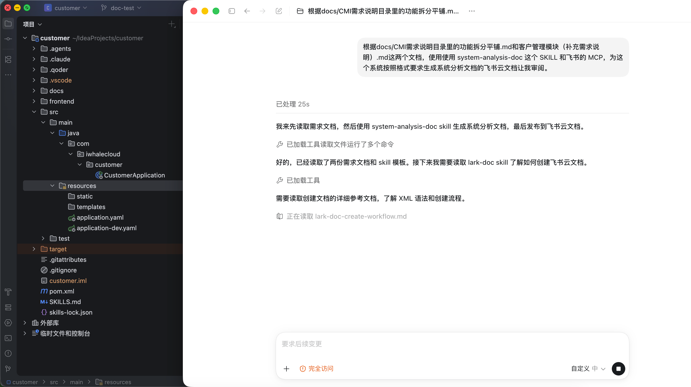

为什么关注文档与测试？
在使用 AI Agent 辅助软件开发的过程中，文档编写和单元测试是两个至关重要但往往被忽视的环节。传统方式下，这两个步骤耗时耗力，且质量难以保证。
通过 Codex 和定制化 Skill，我们可以将这两个环节自动化——实现编码前的系统分析文档生成和编码后的单元测试生成，大幅提升开发效率和代码质量。
AI Agent 辅助开发闭环
AI 重点辅助编码前的文档编写和编码后的单元测试，与编码阶段形成完整闭环。
实际案例与效果
以 CMI 要客运营平台-客户管理模块为例，看看两个 Skill 的实际产出。
📋 编码前：系统分析文档
- 生成了完整的 9 章节系统分析文档
- 包含 4 个飞书画板（架构图、2 个流程图、ER 图）
- 定义了 11 张数据库表的详细设计
- 规范了 51 个 RESTful API 接口
- 规划了 16 个测试用例
- 耗时：60 分钟（传统方式 4-8 小时）
🧪 编码后：单元测试
- 生成了 控制层、服务层的完整测试用例
- 实现了 100% 分支覆盖率
- 所有异常测试都清晰标注"异常测试-"前缀
- 使用 @Nested 按方法分组，结构清晰
- 耗时：60 分钟（传统方式 2-4 小时）
📎 文档链接
飞书云文档： CMI 要客运营平台-客户管理模块系统分析文档
两大核心 Skill
一个负责编码前的文档，一个负责编码后的测试——各司其职，互为补充。
system-analysis-doc
- 9 个标准章节结构
- 自动生成 Mermaid 图表
- 数据库表详细设计
- RESTful API 接口定义
- 测试用例规划
- 一键生成飞书云文档
java-unit-test-generation
- 双层测试架构（Controller + Service）
- 全分支覆盖（每个 if 独立测试）
- 异常测试清晰标注
- Mock 策略和 ArgumentCaptor
- @Nested 分组组织
- MyBatis-Plus 分页支持
| 维度 | system-analysis-doc | java-unit-test-generation |
|---|---|---|
| 用途 | 生成系统分析文档 | 生成 Java 单元测试 |
| 阶段 | 编码前 | 编码后 |
| 输入 | 项目代码 + 业务描述 | Controller / Service 源码 |
| 输出 | 飞书云文档（含画板） | Java 测试类文件 |
| 耗时 | 40-60 分钟 | 60-80 分钟 |
如何使用？
几步操作即可完成，无需额外学习成本。
编码前：系统分析文档生成

确认 SKILL 可用
检查 .claude/skills/ 目录下是否存在 system-analysis-doc。
发起对话
使用 system-analysis-doc 这个 SKILL 和飞书的 MCP，为这个系统按照格式要求生成系统分析文档的飞书云文档。
AI 自动处理
分析项目 → 提取架构 → 生成图表 → 创建文档，全程自动化。
编码后：单元测试生成
确认 SKILL 可用
检查 .claude/skills/ 目录下是否存在 java-unit-test-generation。
发起对话
请为 CustomerController 和 CustomerServiceImpl 生成单元测试，要求全分支覆盖。AI 自动处理
分析代码 → 识别分支 → 生成测试用例 → 组织测试类。

获取测试文件
直接生成 CustomerControllerTest.java 和 CustomerServiceImplTest.java。
运行测试
mvn test -Dtest=CustomerControllerTest,CustomerServiceImplTest系统分析文档结构
system-analysis-doc 定义了标准的 9 个章节，确保文档格式统一、内容完整。
一、项目背景
说明项目的业务背景和起因
- 业务增长需求
- 现有系统痛点
- 新业务场景挑战
二、当前现状
描述当前系统的现状和问题
- 人工操作依赖
- 系统性能瓶颈
- 数据一致性问题
三、开发目标
明确业务目标和技术目标
- 业务目标：自动化、体验、成本
- 技术目标：技术栈、性能、架构
四、系统架构图
使用飞书画板展示
- 系统模块划分
- 模块间调用关系
- 技术栈选型与部署架构
五、业务流程图/时序图
展示业务流转或系统交互
- 流程图（flowchart）
- 时序图（sequenceDiagram）
- 泳道图
六、数据库改造
详细的数据库设计
- ER 图：表结构和关联关系
- 详细设计：字段、类型、约束
七、前后端联调接口
完整的 RESTful API 定义
- 接口地址和请求方法
- 请求参数与响应结构
八、测试用例
核心功能的测试用例规划
- 用例编号与测试场景
- 前置条件、步骤与预期结果
九、部署说明
部署步骤和异常处理
- 升级说明：脚本、配置、代码
- 异常说明：回滚与应急
单元测试架构
java-unit-test-generation 采用双层测试架构，确保测试的全面性与隔离性。
🎯 第一层：Controller 测试
- ●测试请求路由与参数绑定
- ●测试校验逻辑与响应结构
- ●测试异常处理与 Mock Service
@WebMvcTest(MyController.class)
@Import(GlobalExceptionHandler.class)
class MyControllerTest {
@Autowired
private MockMvc mockMvc;
@MockitoBean
private MyService myService;
@Test
void methodName_success() {
when(myService.method(any()))
.thenReturn(result);
mockMvc.perform(get("/api/..."))
.andExpect(status().isOk());
}
}🎯 第二层：Service 测试
- ●测试所有业务逻辑与分支路径
- ●测试异常处理与数据操作
- ●Mock Mapper 层与全分支覆盖
@ExtendWith(MockitoExtension.class)
class MyServiceImplTest {
@InjectMocks
private MyServiceImpl service;
@Mock
private MyMapper mapper;
@Test
void method_success() {
when(mapper.selectById(1L))
.thenReturn(entity);
Result result = service.method(1L);
assertNotNull(result);
}
}关键特性
✅ 全分支覆盖
每个 if 分支都有独立测试用例，确保 100% 覆盖率
🎯 异常测试标注
所有异常测试用"异常测试-"前缀清晰标注
📦 @Nested 分组
按方法分组测试，结构清晰，便于维护
🔧 ArgumentCaptor
验证写操作传入的参数是否正确
FAQ
总结
通过 AI Agent 和定制化 Skill，我们实现了开发全生命周期的自动化支持：
- 编码前：system-analysis-doc 自动生成系统分析文档，确保设计完整规范
- 编码后：java-unit-test-generation 自动生成单元测试，保证代码质量
- 效率提升：从传统方式的 12+ 小时缩短到 2 小时，效率提升 75%
- 质量保证：100% 格式标准化 + 100% 分支覆盖率
- 知识沉淀：文档和测试都符合企业标准，便于团队协作
立即开始使用，让 AI 成为你的开发助手！